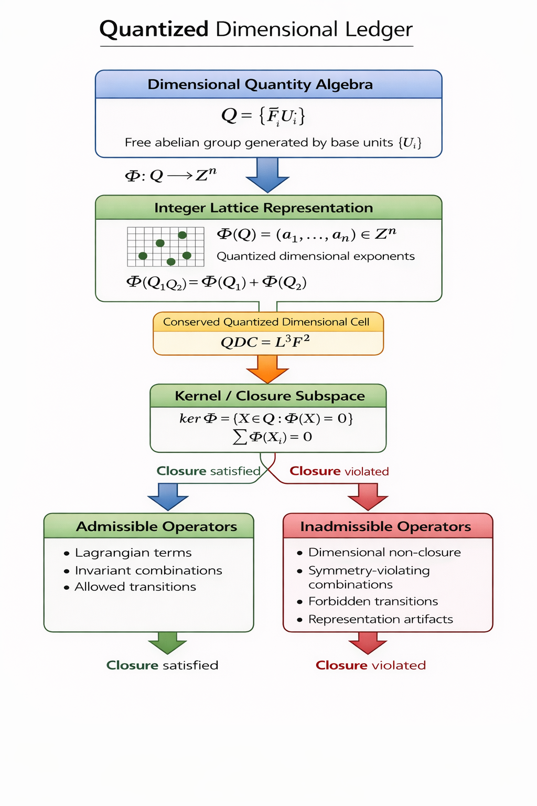

This page provides the formal structure behind the Quantized Dimensional Ledger (QDL) framework.
For a first-pass conceptual overview and its consequences for physics, see the homepage.
The Quantized Dimensional Ledger as a Structural Research Program
The Quantized Dimensional Ledger (QDL) reformulates dimensional analysis as an integer-lattice structure in which dimensional quantities map to exponent vectors and physically admissible operators are identified by a dimensional closure condition.
In the QDL framework, dimensional quantities form a free abelian algebra generated by base units. The ledger map sends each quantity to a vector of integer dimensional exponents. Combinations whose exponent vectors satisfy the closure condition lie in the kernel of this mapping and correspond to structurally admissible operators, while combinations violating the condition represent inadmissible dimensional constructions.
QDL is developed as a structural admissibility layer that constrains physical representations prior to model construction and data fitting.
- The dimensional ledger and closure structure
- The admissibility condition and its consequences
- The role of QDL as a pre-empirical filter on models
Use the QDL Admissibility Calculator to test declared vectors, explore worked examples, and view structural admissibility under QDL closure rules.
The calculator provides a live demonstration layer for the research program, including the SMEFT ℤ₆ example, dimensional-failure example, and metrology example.
| QDL is | QDL is not |
| A dimensional admissibility constraint | A replacement for established physics |
| A structural filter on representations | A claim of new particles or forces |
| A pre-verification tool for models | A finalized unified physical theory |
| A framework for operator admissibility questions | A substitute for dynamical calculation or experiment |
One-line identity: QDL provides a structural admissibility constraint on physical representations that acts prior to dynamical calculation.
Program Structure
The main conceptual components of the research program.
Dimensional Lattice
Quantities are represented as integer exponent vectors in a dimensional lattice generated by base units.
Closure Condition
Physically admissible combinations are identified by a dimensional closure rule that selects a kernel-like admissible subset.
Structural Filter
The closure condition is studied as a pre-dynamical admissibility filter on operators, constants, and measurement relations.
Visual Orientation
A compact diagrammatic view of the sequence from quantities to admissible operators.

This research program asks whether dimensional closure adds real structural information beyond conventional dimensional homogeneity. If it does, then the lattice representation may constrain operator organization, guide benchmark discrimination, and sharpen experimental testing.
For a visual summary of how QDL changes model structure at a higher level, see the overview on the homepage.
Research Sequence
The order in which the program is meant to be read and evaluated.
1. Formal Structure
Establish the integer-lattice representation of dimensional quantities and define closure as a structural constraint.
2. Concrete Results
Apply the structural logic to known technical settings such as SMEFT organization, dimensional reasoning failures, and residual-first benchmark design.
3. Experimental and Benchmark Tests
Use public datasets and candidate laboratory platforms to test whether closure-based distinctions produce discriminable consequences.
QDL Unified Admissibility Theory
The current staged program architecture built on the broader QDL framework.
QDL Unified Admissibility Theory is the current programmatic development path of the Quantized Dimensional Ledger. It treats structural admissibility as a prior selection principle on lawful physical representation and organizes the present work as a staged sequence moving from operator filtering and admissibility-preserving maps to closure classes, exclusions, interaction architecture, matter selection, coupled-sector admissibility, constants, and executable admissibility.
This sequence should not be read as a completed grand unified theory. Its claim is narrower and structural: lawful physical content may need to satisfy a common closure principle before detailed dynamics, fitting, or deployment are brought to bear. A broader roadmap layer, QDL: Twenty Grand Challenges, One Ledger, sits above the sequence as a horizon document rather than as an additional stage.
Current public layers
The formal sequence is anchored by a conceptual gateway paper, eight stage papers, a perspective synthesis, and a broader grand-challenges roadmap. Together these make the program legible as a cumulative research architecture rather than a loose set of isolated manuscripts.
Current status includes active submissions, posted Zenodo preprints, and two strategically held placement targets.
How to read this branch
Readers new to this branch should begin with the conceptual gateway, then proceed through the numbered sequence in order. The perspective article clarifies the overall architecture, and the grand-challenges white paper expands the horizon of possible applications without replacing the formal sequence itself.
For the broader framework foundation, continue to the Publications page and the calculator after the sequence logic is clear.
-
Second-Order Consequences of Structural Admissibility: From Operator Filtering to Representation Governance in the Quantized Dimensional Ledger
Conceptual gateway · Submitted to Journal for General Philosophy of Science on 2026-04-14 · Zenodo DOI: 10.5281/zenodo.19645827
-
1. From Operator Filtering to Representation Governance: Admissibility-Preserving Maps in the Quantized Dimensional Ledger
Submitted to International Journal of Theoretical Physics on 2026-04-15 · Zenodo DOI: 10.5281/zenodo.19645477
-
2. Closure Classes in the Quantized Dimensional Ledger: Structural Equivalence Beyond Phenomenology
Zenodo preprint · DOI: 10.5281/zenodo.19632598
-
3. Operator Exclusions from Structural Admissibility in Effective Field Theory: Predictions Beyond Dimensional Analysis in the Quantized Dimensional Ledger
Zenodo preprint · DOI: 10.5281/zenodo.19617281
-
4. Toward Gauge-Like Interaction Organization from Structural Admissibility: Closure Compatibility and Interaction Architecture in the Quantized Dimensional Ledger
Zenodo preprint · DOI: 10.5281/zenodo.19617243
-
5. From Closure to Content: Matter Representation Selection in the Quantized Dimensional Ledger
Submitted to Acta Physica Polonica B on 2026-04-16 · Zenodo DOI: 10.5281/zenodo.19653113
-
6. Global admissibility constraints for coupled sectors in the Quantized Dimensional Ledger
Submitted to Journal of Physics A: Mathematical and Theoretical on 2026-04-17 · Rejected on 2026-04-20 · Zenodo DOI: 10.5281/zenodo.19653195
-
7. Physical Constants as Structural Interface Objects in a Dimensional Closure Framework for Metrology
Held for future Acta IMEKO placement · Zenodo DOI: 10.5281/zenodo.19653309
-
8. A Decision Procedure for Structural Admissibility in the Quantized Dimensional Ledger
Held for future Journal of Physics A placement strategy · Zenodo DOI: 10.5281/zenodo.19653596
Perspective synthesis
QDL Unified Admissibility Theory: From Dimensional Closure to Representation Governance in Physics
Zenodo DOI: 10.5281/zenodo.19670444
Roadmap layer
QDL: Twenty Grand Challenges, One Ledger
Program-scale horizon document · Zenodo DOI: 10.5281/zenodo.19655759
Benchmark and Test Logic
How the research program connects formal structure to empirical discrimination.
Residual-First Benchmarking
Benchmark records compare constrained and baseline models under declared uncertainty, emphasizing residual structure, reproducibility, and transparent adequacy checks.
Experimental Discriminants
The program studies whether dimensional-closure logic implies laboratory discriminants that can be separated from conventional parameterized alternatives.
Proposed Platform Track
- Torsion-balance discriminants
- NV-center geometry and field sweeps
- Cavity resonator scaling tests
- Metamaterial dispersion-collapse signatures
Torsion Balance Scaling
Precision torsion-balance experiments are one candidate platform for probing dimensional-closure scaling relations in gravitational or quasi-gravitational regimes.
Quantum and Photonic Platforms
NV-center systems, optical cavities, and related resonant platforms offer cleaner routes to controlled discriminant tests because geometry, frequency, and coherence can be swept systematically.
Replication Starter Kit
Executed benchmark records are intended to be reproducible from public data using transparent analysis environments. A minimal replication stack would typically include Python with numpy and matplotlib, along with standard fitting and residual-inspection workflows.
The benchmark records belong on the Publications and Resources pages as citable or usable records. This page gives the scientific logic that connects them.
Implications
Why the framework matters if its structural claims survive criticism and test.
Measurement Integrity
Dimensional closure offers a systematic approach for auditing measurement models and ensuring consistency across transformations, conversions, and reporting pipelines.
Model Pre-Verification
A closure rule can reject structurally invalid constructions before simulation, fit optimization, or downstream deployment, potentially reducing silent model failures.
EFT and Operator Pruning
If closure really adds structure beyond homogeneity, then admissibility may become a nontrivial constraint on EFT organization and operator selection.
Cross-Domain Leverage
The same structural logic may also be useful in engineering, instrumentation, and other complex model-driven systems where dimensional consistency is necessary but not sufficient.
Selected Application Directions
Representative downstream branches of the broader program.
Gravity and Cosmology
One downstream direction studies whether dimensional-closure logic can be applied to cosmological expansion, curvature structure, and related gravitational admissibility questions.
Effective Field Theory
Another direction applies ledger lattices and closure constraints to EFT and scalar operator settings, extending the admissibility logic beyond the initial core examples.
Engineering and Model Integrity
A broader methodological branch treats dimensional admissibility as a pre-verification tool for engineering models, measurement pipelines, and other high-consequence systems.
The visual sequence above summarizes the program in the order most useful for first-time technical readers: structure, test, and geometry. For formal development and applications, continue to the Publications page or open the QDL Calculator for a live demonstration layer.